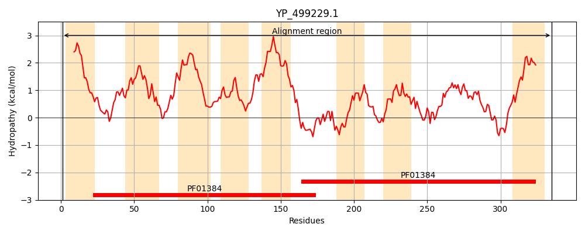
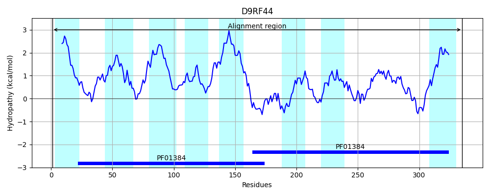
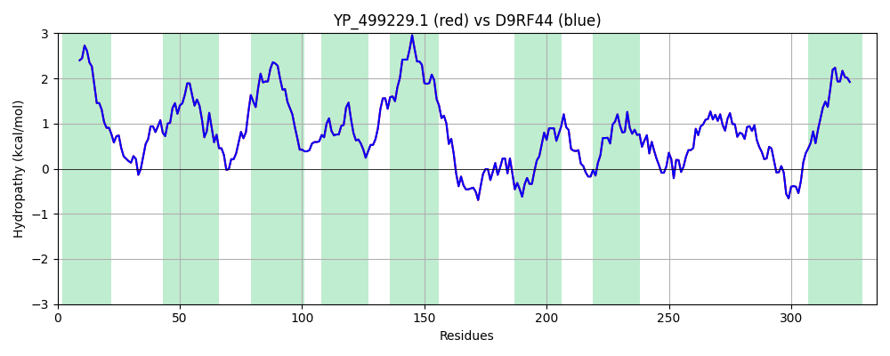

Hit Accession: D9RF44
Hit TCID: 2.A.20.1.7
Hit Description: gnl|BL_ORD_ID|3515 gnl|TC-DB|D9RF44|2.A.20.1.7 Low-affinity inorganic phosphate transporter OS=Staphylococcus aureus (strain JKD6159) GN=pitA PE=4 SV=1
Mach Len: 335
e:0.000000
Query TMS Count : 8
Hit TMS Count: 8
TMS-Overlap Score: 8.600000
Predicted Substrates:CHEBI:7793;phosphate(3-)
BLAST Alignment:
Score: 1666 , Bit scores: 646 bits, E-value: 0.0e+00, Alignment length: 335, Percentage identity: 100
Query: 1 MSYIIIVTIAVVIFSLIFDFINGFHDTANAVATAVSTRALTPKTAILMAAVMNFIGALTFTGVAGTITKDIVDPFKLENGLVVVLAAILAAIIWNLATWFYGIPSSSSHALIGSIAGAAIASEGSFGVLHYQGFTKIIIVLIVSPIIAFCVGFLMYSIFKVIFKNANLTRANRNFRFFQIFTAALQSFSHGTNDAQKSMGIITLALIVANVQNDGSVEPQLWVKFACATAMGLGTAIGGWKIIKTVGGNIMKIRPANGAAADLSSALTIFVASSLHFPLSTTHVVSSSILGVGASNRAKGVKWSTAQRMIITWVITLPISALLAGLLFYILNLFF 335
MSYIIIVTIAVVIFSLIFDFINGFHDTANAVATAVSTRALTPKTAILMAAVMNFIGALTFTGVAGTITKDIVDPFKLENGLVVVLAAILAAIIWNLATWFYGIPSSSSHALIGSIAGAAIASEGSFGVLHYQGFTKIIIVLIVSPIIAFCVGFLMYSIFKVIFKNANLTRANRNFRFFQIFTAALQSFSHGTNDAQKSMGIITLALIVANVQNDGSVEPQLWVKFACATAMGLGTAIGGWKIIKTVGGNIMKIRPANGAAADLSSALTIFVASSLHFPLSTTHVVSSSILGVGASNRAKGVKWSTAQRMIITWVITLPISALLAGLLFYILNLFF
Sbjct: 1 MSYIIIVTIAVVIFSLIFDFINGFHDTANAVATAVSTRALTPKTAILMAAVMNFIGALTFTGVAGTITKDIVDPFKLENGLVVVLAAILAAIIWNLATWFYGIPSSSSHALIGSIAGAAIASEGSFGVLHYQGFTKIIIVLIVSPIIAFCVGFLMYSIFKVIFKNANLTRANRNFRFFQIFTAALQSFSHGTNDAQKSMGIITLALIVANVQNDGSVEPQLWVKFACATAMGLGTAIGGWKIIKTVGGNIMKIRPANGAAADLSSALTIFVASSLHFPLSTTHVVSSSILGVGASNRAKGVKWSTAQRMIITWVITLPISALLAGLLFYILNLFF 335 | Protein Hydropathy Plots: |
|---|
|  |  |
Pairwise Alignment-Hydropathy Plot:
|
|---|
|  |